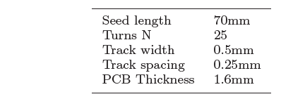

Field generator#
Transmitter coil#
An total of eight transmitter coils are used in the Anser EMT system. Each coil emits a time-varying magnetic field in the 20kHz band. Each coil is connected to a single channel of the Signal Generator AC Amplifer stage.
The transmitter coil is fabricated as a printed circuit board. Schematic and Gerber files for the coil design are available in the project repository.
The design for a single PCB coil is shown in the figure below.
{kind=link}
The dual-layer PCB shares a single winding between the top and bottom layers. A total of 25 coil turns are present in the design. L1 and L2 denote the PCB via’s where the PCB winding switches layer. The square PCB measures 72mm in length. A photo of a fabricated coil is shown below.
{kind=link}
The magnetic field emitted by each coil is modelled using the current filament method described by Sonntag et al. [1]. Each straight-line copper ‘filament’ of the PCB coil is treated as a uniform individual current-carrying conductor. The magnetic field due to each filament is calculated using the Biot-Savart law. The field strength from each individual are added using superposition to provide the total magnetic field of the PCB coil. The diagram below shows a single current-carrying filament with current \(I\) being observed from a point \(P=(x,y,z)\).

The magnetic field strength at \(P\) due to the filament is given by:
where \(a_i\) is a vector in the direction of the filament, \(b_i\) is a vector pointing from an observation point \(p\) to the end of the filament, and \(i_c\) is a vector pointing from \(p\) to the start of the filament. \(n\) represents the total number of filaments in the coil, while \(i\) is the filament under consideration.
The equation above requires the coordinates of each PCB filament to be precisely known. The square nature of the emitter coils makes this calculation simple to perform. The PCB fabrication parameters (trace length, spacing, trace thickness) are shown in the table below. These parameters are used to iteratively calculate the coordinates of each current filament for N turns of a PCB coil.
Code for determining the Anser EMT coil filaments is available in the repository. (The first image on this page was generated in Matlab using this code).
{kind=link}
Coil housing#
The individual emitter PCB coils are set in precisely known locations within the coil housing. These locations are used to generate the magnetic field model for the Anser system. The housing is fabricated from two metal-free polycarbonate halves containing precisely machined square recesses which match the dimensions of the PCB coils. Full schematics for the coil housing can be found in the Anser project repository. The locations of the emitter coils within the recesses of the bottom half of the housing. Cable routing to each coil is also shown:

The final assembly of the coil holder. The coils are ‘sandwiched’ between the two halves. This also acts as a strain relief for the cables:

Full solidworks schematics for the coil holder are available in the project repository. The 4 inner mounting holes are used to secure a Duplo baseplate [2] for the purpose of calibration and testing.